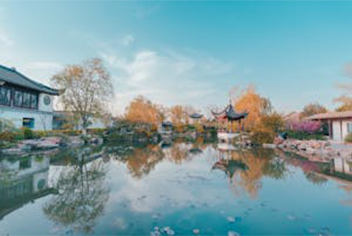

首页
景点推荐
旅行攻略
票务预定
酒店预定
纪念周边
精选跟团游
美食探索
生活是一场无尽的旅行，每一步都是新的风景
黄石公园，由美国国家公园管理局负责管理。1872年3月1日它被正式命名为保护野生动物和自然资源的国家公园，
于1978年被列入《世界遗产名录》的世界自然遗产。这是世界上第一个国家公园。
关于黄石公园
必去景点
探秘日本之巅：
富士山之旅——在云端与自然共舞的绝美体验
富士山，位于日本本州岛中南部，是一座活火山，也是日本最高的山，海拔3776米。它横跨
静冈县和山梨县，以其完美的圆锥形和四季变换的壮丽景色而闻名。富士山不仅是自然奇观，
也是日本文化和宗教的象征，自古以来就被视为神圣之地。周围环绕着众多神社和寺庙，如富
士山本宫浅间大社，是朝圣者的重要目的地。富士山的历史悠久，攀登活动自平安时代便开始
流行，至今仍是日本人心中的圣山，也是艺术家灵感的源泉。2013年，富士山被联合国教科文
组织列为世界文化遗产，进一步彰显了其在世界文化中的重要地位。
路线
东京
河口湖
五合目
了解更多
朝圣之旅：
拉萨——探访世界屋脊上的圣城与灵魂的归宿
拉萨，位于中国西藏自治区中部，海拔约3650米，是世界上海拔最高的城市之一。作为藏传
佛教的圣地，拉萨以其丰富的宗教文化和壮丽的自然风光闻名。布达拉宫是这座城市的象征，这
座宏伟的宫殿不仅是西藏政教合一的标志，也是藏传佛教的圣地。拉萨还拥有大昭寺、小昭寺等
众多宗教遗址，展示了深厚的文化底蕴和艺术成就。拉萨的街道上，朝圣者和转经筒的景象无处
不在，体现了藏传佛教的日常生活。拉萨不仅是西藏的政治、经济和文化中心，也是体验藏文化
和高原生活的理想之地。
路线
拉萨
布达拉宫
大昭寺
了解更多
热门景点

苏州博物馆
重庆洪崖洞
南京梧桐大道
小众景点
应县木塔，辽代建筑奇迹，位于山西应县，高
67.31米，九层全木结构，无钉榫卯连接，千
年屹立不倒，彰显古代工艺之精湛。
赛里木湖，新疆博尔塔拉州的高山明珠，
海拔2071米，湖面广袤，清澈见底。四周
雪山环绕，草原辽阔，是避暑与观雪胜地,
也是野生动���物的乐��。
稻城亚丁，位于四川甘孜州，被誉为“最后
的香格里拉”。这里雪山、冰川、森林、湖
泊交相辉映，三座神山与五色海、牛奶海等
景点构成绝美画卷，藏族文化与自然美景相
得益彰，是高原风光的绝佳探索之地。
联络我们
客户服务支持
服务保障
联络我们
更多服务咨询
关于
关于无忧旅程
传媒中心
加入我们
条款及细则
其他服务
投资者联系
刊登我们的酒店
安全性
copyright © 2001—2024 无忧旅程 版权所有